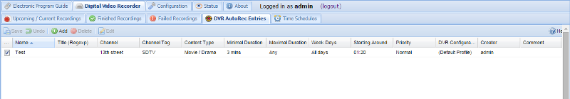

Digital Video Recorder - Autorec
This tab is used to create and maintain Digital Video Recorder rules. These can be EPG-driven (such as those created from the initial EPG tab) through the DVR AutoRec Entries tab , or can be timer-based through the Time Schedules tab.
This tab controls EPG-driven recording rules.

Buttons
The buttons have the following functions:
Add : Add and configure a recording rule - define the channel, schedule, DVR configuration, priority, etc.
Delete : Delete an existing recording rule.
Edit : Manually edit an existing recording rule. This uses the same fields as Add, but they’re pre-populated with their current values.
Save : Saves any changes made to the recording rule list.
Undo : Undoes any changes made to the recording rules list (any changed fields will be marked with a small red triangle).
Columns
The columns have the following functions:
Enabled : Check or clear this box to enable or disable this rule.
Name : The name you’ve given to the rule, e.g. ‘Stuff involving Jeremy Clarkson’.
Directory : When specified, this setting overrides the subdirectory rules (except the base directory) specified by the DVR configuration and puts all recordings done by this entry into the specified subdirectory. Useful for e.g. recording multiple different news broadcasts into one common subdirectory called “News”. The backshlash and other special characters are escaped, so it is possible to create only one sublevel subdirectories (the base path for the target directory is always taken from the DVR configuration).
Title (Regexp) : The title of the programme to look for. Note that this accepts case-insensitive regular expressions, so you can use pattern matching as Tvheadend scans the EPG for programmes to record.
Fulltext : When the fulltext is checked, the title pattern is matched against title, subtitle, summary and description.
Channel : The channel on which this rule applies, i.e. the channel you’re aiming to record.
Channel Tag : A channel tag (e.g. a group of channels) on which this rule applies.
Content Type : The content type (Movie/Drama, Sports…) to be used to filter matching events/programmes.
Minimal Duration : The minimal duration of a matching event - in other words, only match programmes that are no shorter than this duration.
Maximal Duration : The maximal duration of a matching event - in other words, only match programmes that are no longer than this duration.
Week Days : On which specific days of the week to find matching programmes.
Start After : An event which starts between this “start after” and “start before” will be matched (including boundary values).
Start Before : An event which starts between this “start after” and “start before” will be matched (including boundary values).
Priority : The priority of any recordings set because of this rule: important, high, normal, low, unimportant.
DVR Configuration : The DVR configuration (e.g. extra start/stop time, post-processing rules) to be used for any recordings set because of this rule.
Creator : The creator of the rule. Automatically set.
Comment : A free-text comment. Not used otherwise.